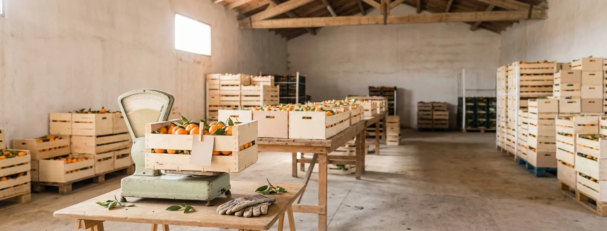

La cooperativa de clementines
Al Baix Ebre la clementina és pa de cada dia. La classe fa de cooperativa: posa preus per quilo, compara caixes de 5 i 10 kg, calcula descomptes, el que es perd al magatzem i la part que arriba al pagès. Les mates es toquen, es dibuixen i, al final, s'escriuen.
Per a l'aula · sessió 5
Presentació a l'aula Fitxa per imprimir Camí de la seqüència
La fitxa del material
Objectiu
Entendre el percentatge com una raó "de cada 100" i calcular-lo amb estratègies pròpies (el 10 %, l'1 %, la meitat), connectant-lo amb fraccions i decimals per resoldre problemes reals de compra i venda.
Criteris
- Resol problemes de la vida quotidiana amb proporcionalitat i percentatges, i explica el procés que ha seguit.
- Representa una mateixa quantitat com a fracció, decimal i percentatge, i passa d'una forma a l'altra.
- Comprova si el resultat té sentit en el context (és més o menys de la meitat? d'un terç?).
- Comunica i justifica el raonament amb models (quadrícula, recta doble, taula).
Durada
Seqüència de 8 sessions en 3 setmanes. Aquesta mostra detalla la sessió 5 (dijous 15:00, 1 h 30). Les sessions 4 i 6 són les franges de dimarts i divendres.
Recursos
- Presentació tàctil de la sessió
- Plantilla "caixa de 100" i 100 fitxes taronja per grup
- Tires de paper per plegar (recta doble)
- Fitxa de la sessió, 4 versions
- Tiquet de sortida
Al currículum (Decret 175/2022)
Competències específiques de Matemàtiques: interpretar situacions de la vida quotidiana en termes matemàtics, resoldre problemes amb estratègies diverses, connectar idees i representacions, i comunicar el raonament. Sabers del sentit numèric (fraccions, decimals i percentatges; raó i proporció), del sentit de la mesura (massa i diners) i del sentit algebraic (relacions de proporcionalitat directa). Transversals: competència ciutadana (consum responsable: quina part del preu arriba al pagès) i competència personal i social (treball cooperatiu en parelles).
L'arquitectura: del concret al símbol
1Ho toquem
Caixes de veritat, la bàscula de la cuina, 100 fitxes taronja sobre la plantilla, una tira de paper que es plega en meitats i desenes.
2Ho dibuixem
La quadrícula 10×10, la recta numèrica doble i la taula de proporcionalitat: el mateix problema vist de tres maneres.
3Ho escrivim
Fracció, decimal i percentatge com tres "vestits" del mateix nombre. El càlcul surt del dibuix, no d'una regla memoritzada.
Prova el manipulable
El laboratori del percentatge
Toca o arrossega sobre la quadrícula, o mou la maneta de la recta doble: les dues van lligades. És el mateix que l'alumnat fa amb fitxes i tires de paper, i el que veurà gran a la pantalla.
El camí del 10 %
Dades d'exemple, plausibles per a una cooperativa del Baix Ebre: caixa de 10 kg a 18 €, caixa de 5 kg a 10 €, un 8 % de destrí, un 15 % de descompte per als socis i 35 € de cada 100 € per al pagès.
Com es desenvolupa la sessió 5 · "Quant és el 15 %?"
Quina oferta triaries?
Caixa de 10 kg a 18 €. Oferta A: 3 € menys. Oferta B: un 15 % de descompte. Voten a mà alçada i la pantalla compta els vots.
La caixa de 100
Per grups, 100 fitxes taronja sobre la plantilla 10×10. "Arriben 100 clementines i 8 tenen cops": les giren. 8 de 100 és el 8 %. I les que es venen?
La tira que es plega
Ara n'arriben 500 kg. Pleguen la tira en deu parts: a dalt escriuen el %, a baix els kg. El 10 % és 50 kg, l'1 % és 5 kg, el 8 % és 40 kg.
Fraccions amigues
Emparellen ½, ¼, ¾, ⅕ i 1⁄10 amb el seu percentatge a la pantalla. Cada parella pinta la seva quadrícula.
Problemes de la cooperativa
Modelitzeu junts la part del pagès (35 % de 18 €) a la pantalla. Després, en parelles, la fitxa: destrí, fraccions amigues, descompte dels socis i el pagès.
Revelem la predicció i el repte
15 % de 18 € = 2,70 €: guanya l'oferta A. Repte amb cronòmetre: sempre guanya la A? Amb el lliscador del preu descobreixen que a 20 € empaten.
Tiquet de sortida
"Què és més: el 20 % de 50 € o el 50 % de 20 €?" Voten i ho justifiquen al tiquet. I l'autoavaluació del final de la fitxa.
El material manipulable
La caixa de 100
Plantilla A4 plastificada amb 10×10 forats i 100 fitxes (o taps) taronja. Fa visible "de cada 100" i que el 10 % és una fila.
La tira que es plega
Tira de paper de 30 cm. Plegada en dos dóna el 50 %; en deu, el 10 %. A dalt el %, a baix la quantitat: és la recta doble feta amb les mans.
La caixa de veritat
Una caixa de clementines amb l'etiqueta de preu (la de la sessió 2) presideix la taula. Totes les dades dels problemes hi remeten.
Quatre versions de la fitxa · el mateix problema comparat
Avaluació
| Criteri | No assolit | Assoliment satisfactori | Assoliment notable | Assoliment excel·lent |
|---|---|---|---|---|
| Calcula percentatges d'una quantitat | Confon el % amb una quantitat fixa (15 % = 15 €). | Troba el 10 % i el 50 % amb ajuda del model. | Combina 10 %, 5 % i 1 % per trobar qualsevol percentatge. | Tria l'estratègia més curta i la justifica (15 % = 10 % + la meitat). |
| Connecta fracció, decimal i % | No relaciona les tres formes. | Relaciona ½, ¼ i 1⁄10 amb el seu %. | Passa d'una forma a l'altra amb fraccions de denominador 100. | Ho fa amb fraccions noves (⅛, 7⁄20) i ho explica amb la quadrícula. |
| Resol i comprova en context | Dóna un número sense unitat ni comprovació. | Resol el problema i posa la unitat. | Comprova si té sentit (més o menys d'un terç, de la meitat). | Compara situacions (ofertes, setmanes) i argumenta quina convé. |
Tiquet de sortida (formatiu)
- Pinta el 30 % i digues quant és de 20 €.
- Quina fracció és el 25 %? Explica-ho amb un dibuix.
- Què és més: el 20 % de 50 € o el 50 % de 20 €? Per què?
Es classifiquen en tres piles (ho té · gairebé · encara no) i decideixen els grups de la sessió 6.
Llista d'observació durant la manipulació
- Fa servir files de 10 a la quadrícula en lloc de comptar d'una en una.
- Diu "de cada 100" quan explica un percentatge.
- A la recta doble, escriu les dues magnituds a cada marca.
- Comprova el resultat abans de donar-lo per bo.
Com ho veus?